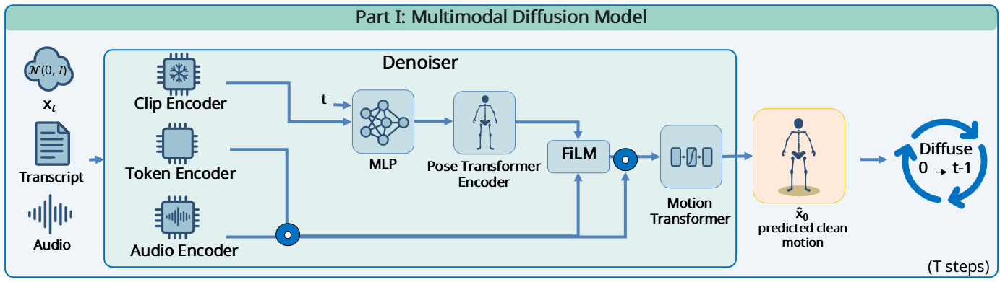
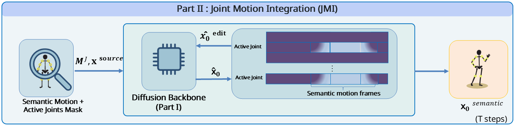

While recent advances in co-speech gesture generation have achieved impressive rhythmic synchronization, synthesizing gestures that are both semantically meaningful and faithful to a speaker's unique non-verbal style remains an open challenge. Semantic gestures, such as iconic shapes or deictic pointing, are statistically sparse, making them difficult to learn effectively within standard generative models.
We present SiGnature, a framework for Stylized and Semantic Gesture generation that reconciles precise semantic control with high-fidelity style preservation.
Unlike prevalent methods that rely on entangled latent representations, SiGnature operates in an explicit joint-rotation space. This design enables our core contribution, Joint Motion Integration (JMI), a training-free inference mechanism capable of injecting any external motion sequence, particularly in-the-wild semantic gestures, directly into the diffusion process. JMI automatically identifies the specific "active joints" conveying a semantic action and injects them into the generation, while relying on the diffusion backbone to synthesize the remaining body dynamics, including posture and flow, in accordance with the pre-learned style of the target speaker. This allows for the plug-and-play integration of arbitrary motions, including complex semantic gestures, without retraining or introducing the "Frankenstein" artifacts typical of cut-and-paste methods.
Extensive experiments and perceptual studies demonstrate that SiGnature offers superior semantic motion control while maintaining smooth and natural co-speech gesture generation and preserving the distinct characteristics of the speaker, thereby outperforming state-of-the-art baselines.
Our framework operates in two stages to seamlessly inject semantic gestures into co-speech motion.

Part I — Multimodal Diffusion Backbone.
We generate co-speech motion directly in SMPL-X rotation space. Starting from Gaussian noise, the model denoises a motion sequence conditioned on the speaker's audio, transcript, and a global semantic embedding. Working in explicit rotation space yields motion that is both smooth and realistic..

Part II — Joint Motion Integration (JMI). At inference, a Find Active Joints module identifies which joints and frames carry the gesture's meaning. JMI injects only those trajectories into the backbone's prediction at every diffusion step, while the backbone synthesizes the rest of the body in the target speaker's style - enforcing the intended gesture while preserving the speaker's posture, flow, and personality.
The same speech driving different target speakers. Each keeps its own personal motion style.
The same semantic gesture performed by five different speakers, each in their own personal style. Use the arrows to browse gestures.
Use the arrows to browse gestures.
Style is captured by fine-tuning a personalized diffusion model per identity. Low diagonal entries confirm SiGnature preserves each speaker's style, while high off-diagonal entries show no style leakage. The Source SeG row shows the raw gestures are out-of-distribution — contrasting those scores with our diagonal (e.g. Sophie: 5.19→1.87) confirms JMI pulls injected gestures back into the target speaker's stylistic manifold. (Scores are ×10; cross-identity FGD; lower is better.)
| Scott (GT) | Wayne (GT) | Ayana (GT) | Sophie (GT) | Lawr. (GT) | |
|---|---|---|---|---|---|
| Scott (Gen.) | 1.00 | 3.07 | 3.66 | 3.55 | 2.92 |
| Wayne (Gen.) | 1.81 | 1.28 | 3.35 | 2.84 | 2.77 |
| Ayana (Gen.) | 2.72 | 3.06 | 1.84 | 3.40 | 3.41 |
| Sophie (Gen.) | 3.04 | 3.88 | 4.09 | 1.87 | 4.24 |
| Lawr. (Gen.) | 1.36 | 2.41 | 3.11 | 3.07 | 1.18 |
| Source (SeG) | 3.68 | 4.36 | 4.57 | 5.19 | 3.22 |
Before any semantic injection, our diffusion backbone alone produces co-speech gestures that are markedly smoother than latent-space baselines. By generating motion directly in explicit rotation space, we achieve the lowest jerk while keeping the highest motion diversity - a property we call "active smoothness", motion that is physically clean yet dynamic.
| Method | FGD ↓ | Diversity ↑ | BC ↑ | Jerk ↓ | Accel ↓ | FPS ↑ |
|---|---|---|---|---|---|---|
| EMAGE | 5.54 | 13.08 | 7.70 | 66.76 | 4.16 | 925 |
| SynTalker | 4.66 | 12.30 | 7.37 | 55.40 | 3.40 | 18 |
| GestureLSM (Diffusion) | 4.10 | 12.56 | 7.35 | 57.73 | 3.47 | 399 |
| GestureLSM (MeanFlow) | 4.04 | 12.46 | 7.45 | 61.16 | 3.69 | 1890 |
| Ground Truth | 0.00 | 13.09 | 6.83 | 42.13 | 3.03 | – |
| Ours (1k steps) | 4.72 | 13.66 | 6.81 | 34.91 | 2.60 | 55 |
| Ours (20 steps) | 5.48 | 13.29 | 6.84 | 33.99 | 2.59 | 2802 |
Standard metrics (FGD, Diversity, BC) are ×10−1. Best results among generated methods are in bold.
This work was partially supported by the Horizon 2020 FET Proactive project GuestXR (#101017884), the Israel Science Foundation (Grant no. 1427/25), and the Joint NSFC-ISF Research (Grant no. 3077/23).
@article{Rosenthal2026SiGnature,
Author = {Adi Rosenthal and Tomer Koren and Nadav Shaked and Doron Friedman and Ariel Shamir},
Title = {SiGnature: Explicit Motion Diffusion for Stylized Semantic Gesture Generation},
Year = {2026},
Eprint = {arXiv:2606.15889},
}